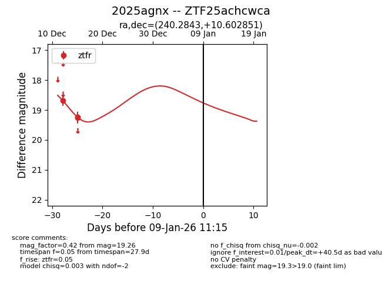
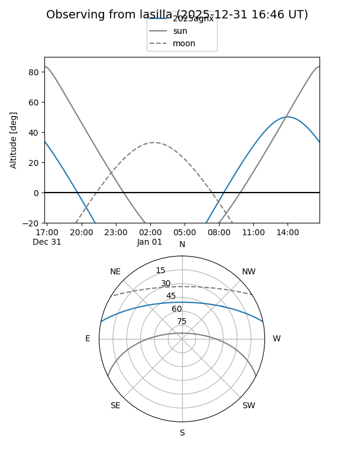
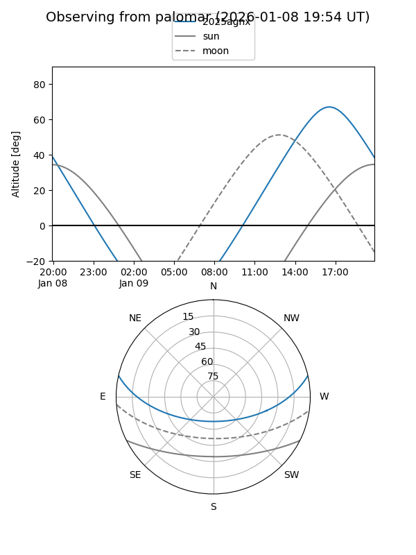
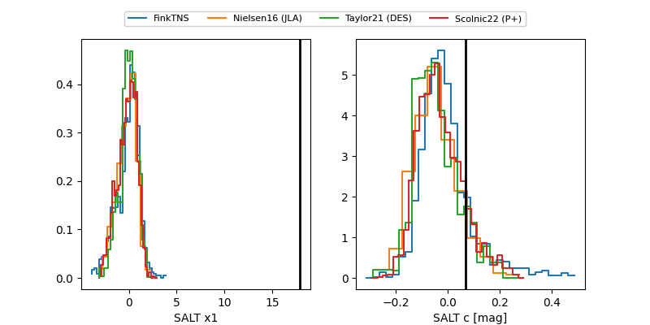

2025agnx
Target 2025agnx at 2025-12-31 18:00
Aliases and brokers:
FINK: link
Lasair: link
ALeRCE: link
TNS: link
YSE: link
alt names
ZTF25achcwca (ztf,fink_ztf)
2025agnx (tns,yse)
Coordinates:
equatorial (ra, dec) = 240.2843,+10.60285
equatorial (HMS+DMS) = 16:01:08.22,+10:36:10.27
galactic (l, b) = (22.0251,+42.51231)
Flags:
Photometry:
last ztfr=19.26
3 ztfr detections
Lightcurve

Visibility


Additional plots
